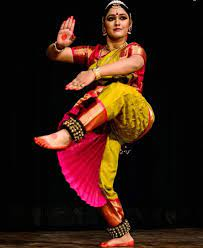

Group 8
भारत एक सांस्कृतिक रूप से समृद्ध देश है, जहां लगभग हर राज्य की अपनी भाषा, व्यंजन और नृत्य रूप हैं। जब नृत्य की बात आती है, तो भारत में पारंपरिक, शास्त्रीय, लोक और आदिवासी नृत्य शैलियाँ हैं और सभी बस अद्भुत हैं। सभी अविश्वसनीय शास्त्रीय नृत्य प्राचीन काल में देश में उत्पन्न हुए थे
- भरतनाट्यम

भरतनाट्यम भारत की सबसे पुरानी शास्त्रीय नृत्य परंपरा है। नृत्य रूप दक्षिण भारत में प्रचलित था, और कई पुस्तकों ने इसे संहिताबद्ध किया है, जैसे कि भरत मुनि द्वारा नाट्य शास्त्र। भरतनाट्यम तमिलनाडु का राज्य नृत्य है।भरतनाट्यम में विभिन्न प्रकार की बनियाँ हैं।
बानी, या 'परंपरा', एक ऐसा शब्द है जिसका इस्तेमाल किसी गुरु या स्कूल के लिए विशिष्ट नृत्य तकनीक और शैली का वर्णन करने के लिए किया जाता है। इनका नाम गुरु के गांव (कुछ बनियों को छोड़कर) के अनुसार रखा गया है
। भरतनाट्यम शैली अपने निश्चित ऊपरी धड़, मुड़े हुए पैरों और घुटनों के बल (अरमंडी) को शानदार फुटवर्क के साथ, और हाथों, आंखों और चेहरे की मांसपेशियों के इशारों पर आधारित सांकेतिक भाषा की एक परिष्कृत शब्दावली के लिए विख्यात है
- कथक
कथक भारतीय शास्त्रीय नृत्य के आठ प्रमुख रूपों में से एक है। कथक की उत्पत्ति पारंपरिक रूप से प्राचीन उत्तरी भारत में कथकर या कहानीकार के रूप में जाने जाने वाले यात्रा करने वालों को दी जाती है
। कथक शब्द वैदिक संस्कृत शब्द कथा से लिया गया है जिसका अर्थ है "कहानी", और कथकर जिसका अर्थ है "वह जो एक कहानी कहता है",
या "कहानियों के साथ करना"। भटकते हुए कथाकारों ने नृत्य, गीतों और संगीत के माध्यम से महान महाकाव्यों और प्राचीन पौराणिक कथाओं की कहानियों का संचार किया। कथक नर्तक अपने हाथों
की हरकतों और व्यापक फुटवर्क, अपने शरीर की गतिविधियों और लचीलेपन के माध्यम से विभिन्न कहानियां सुनाते हैं लेकिन सबसे महत्वपूर्ण अपने चेहरे के भावों के माध्यम से। कथक भक्ति आंदोलन
के दौरान विकसित हुआ, विशेष रूप से हिंदू भगवान कृष्ण के बचपन और कहानियों को शामिल करके, साथ ही स्वतंत्र रूप से उत्तर भारतीय राज्यों के दरबार में
- सत्त्रिया
सत्त्रिया नृत्य रूप को 15 वीं शताब्दी ईस्वी में महान वैष्णव संत और असम के सुधारक, महापुरुष शंकरदेव द्वारा वैष्णव धर्म के प्रचार के लिए एक शक्तिशाली माध्यम के रूप में पेश किया गया था।
यह भारतीय नृत्य शैली बाद में नृत्य की एक विशिष्ट शैली के रूप में विकसित और विस्तारित हुई।
असमिया नृत्य और नाटक का यह नव-वैष्णव खजाना सदियों से सत्त्रों यानी वैष्णव मठों या मठों द्वारा बड़ी प्रतिबद्धता के साथ पोषित और संरक्षित किया गया है। अपने धार्मिक चरित्र और सत्त्रों के साथ जुड़ाव के कारण, इस नृत्य शैली को उपयुक्त रूप से सत्त्रिया नाम दिया गया था।
शंकरदेव ने अपने दुर्लभ दृष्टिकोण के साथ विभिन्न ग्रंथों, स्थानीय लोक नृत्य के विभिन्न तत्वों को शामिल करके इस नृत्य रूप की शुरुआत की।
नव-वैष्णव आंदोलन से पहले असम में दो नृत्य रूप प्रचलित थे जैसे ओजापाली और देवदासी कई शास्त्रीय तत्वों के साथ।
भारत दूसरा सबसे अधिक आबादी वाला देश है और दुनिया के सबसे पुराने देश में से एक में विविध संस्कृति है। इसकी संस्कृति का एक हिस्सा हस्तशिल्प है। भारत में 70 लाख हस्तशिल्प कलाकार हैं
इसमें बहुत सारे प्रकार के हस्तशिल्प उत्पाद हैं
आइए देखते हैं उनमें से कुछ
- लाख की चूड़ियाँ
पुराने युग की तरह आज के आधुनिक युग में भी लाख की चूड़ियों का महत्व बरकरार है। आज भी सुहागनों की कलाइयाँ लाख की चूड़ियों के बगैर सूनी व उदास समझी जाती हैं। आज फैशन के इस युग में रोजाना नित नए आकार-प्रकार में ढलकर हाथों की शोभा बनने वाले लाख के ये कंगन अब दूर-दूर तक शहर की पहचान कायम कर रहे हैं।
जिसमें गुजरात में रतलामी कंगन खासे चर्चित है, जिसकी माँग आदिवासी अंचलों से लेकर सभी दूर बनी हुई है। और इस फैशन को बढ़ावा देने का काम कर रहे हैं शहरों में रहने वाले लखारा समाज के वे लोग जो अपनी दुकानों पर परिवार सहित लाख की चूड़ियों के निर्माण में दिन-रात भिड़े रहते हैं।
लाख की इन चूड़ियों का महत्व खास तौर पर करवा चौथ, दीपावली तथा मांगलिक कार्यों में बहुत अधिक रहता है। फिलहाल फैशन में मेहरून, कत्थई, सफेद, लाल व चटनी रंग की चूड़ियों की माँग ज्यादा है। और लाख निर्माण का काम किया जाता है पीपल, बेर, खाखरा और धावड़े के पेड़ों पर पाए जाने वाले एक खास किस्म के कीड़े से
। यह कीड़ा पेड़ों की पतली टहनियों पर रेंगते समय हगार के रूप में एक पदार्थ छोड़ता है, जिससे लाख का निर्माण होता है। इसमें धावड़े की लाख मजबूत मानी जाती है, वहीं आरंभिक चरण में कीड़े से उत्पन्न लाख को कुसुम की कच्ची लाख कहा जाता है। इस लाख को कारखानों में ले जाकर धुलवाया जाता है